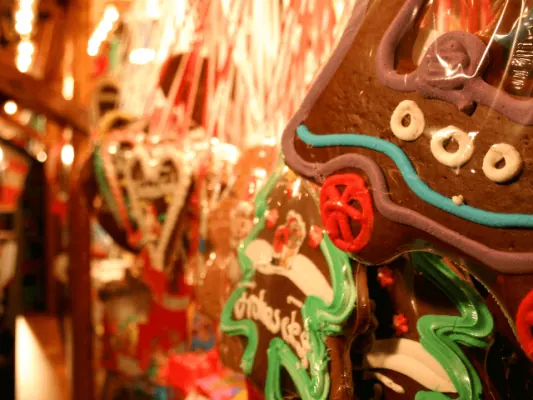

De 10 Beste Restaurants in Nijmegen Centrum
In Nijmegen, de oudste stad van Nederland, schuilt een gastronomische schat die even divers is als zijn rijke geschiedenis. Deze bruisende stad aan de…
Tips en artikelen over eten, uitgaan, uitjes, overnachten en wonen in Nijmegen en omgeving.
In Nijmegen, de oudste stad van Nederland, schuilt een gastronomische schat die even divers is als zijn rijke geschiedenis. Deze bruisende stad aan de…

In Nijmegen zijn er een aantal opties te vinden wanneer je graag exclusief wilt dineren. Exclusief dineren houdt in dat je een gezellige avond uit…

Zoals de meeste van ons wel weten, heeft de Turkse keuken enorm veel te bieden. Een broodje köfte of een heerlijke baklava, veel Nederlanders zijn dol op…

De geschiedenis van de Nijmeegse cafés loopt ver terug in de tijd. Volgens gemeentearchief Nijmegen was er al sinds de viertiende eeuw spraken van één of…

De stad Nijmegen telt vele kerken. Elke kerk heeft zijn eigen oorsprong en geschiedenis: van vrij recent, tot lang geleden of juist al van eeuwen geleden…

Nijmegen telt drie bioscopen, waarvan twee in het centrum en één in Nijmegen-Noord. Een avondje uit naar een van deze gezellige filmzalen kan goed…

Dansen is weer helemaal hip. Jongeren, dertigers, ouderen en koppels: steeds meer mensen gaan op dansles. Het is gezellig, uitdagend en ook nog eens…

Nijmegen bruist het hele jaar door van cultuur. Van openluchtconcerten aan de Waalkade en kleinschalige kunstmarkten in het centrum tot de grote…

In de bruisende stad Nijmegen is van alles te doen. Voor zowel inwoners, studenten als toeristen is het niet nodig om voor festiviteiten of…

Ontdek de Kunst van Edelsmeden in Nijmegen Ben je gefascineerd door de wereld van edelsmeden en wil je je eigen sieraden maken? In Nijmegen vind je een…

Ben je gefascineerd door de Spaanse taal en cultuur en op zoek naar de beste manier om Spaans te leren in Nijmegen? Dan ben je op de juiste plek! In dit…

Cursus Frans in Nijmegen Nijmegen is een uitstekende keuze voor het volgen van een cursus Frans. Of je nu een beginner bent of je vaardigheden wilt…

Wil je een leuke kerstmarkt bezoeken? Ook in Nijmegen zijn in december volop leuke dingen te beleven rond het thema Kerst – kerstmarkten ontbreken daarbij…

De Nijmeegse Vierdaagse 2027. Het lopen is al een uitdaging, maar waar moet je allemaal nog meer aan denken? Lees hier de meest gestelde vragen over de…

De Nijmeegse Vierdaagse is voor duizenden wandelaars hét hoogtepunt van het jaar. Vier dagen lang, tientallen kilometers per dag: het vraagt veel van je…

Wil jij er binnenkort in eigen land op uit? Dan dien je Nijmegen absoluut in overweging te nemen als jouw vakantiebestemming. Het is een prachtige stad…

Houd jij van kamperen, maar gaat het slapen in een tent jou toch net een stapje te ver? Dan kun je ervoor kiezen om met de camper uit kamperen te gaan. Op…

Verblijven in een AirBnB is de afgelopen jaren steeds populairder geworden onder vakantiegangers. Of je nu zelf in Nijmegen woont en er even tussenuit…

Kamperen is een favoriete bezigheid van veel Nederlanders. Zowel jong als oud vertoeven jaarlijks met plezier een weekje in hun tent of caravan, terwijl…

Het is een fenomeen dat steeds bekender is geworden in de afgelopen jaren, namelijk het shoppen in een kringloopwinkel. Dit is niet alleen goed voor de…

Bloemen, de meeste vrouwen zijn er dol op. Maar ook veel mannen kunnen een mooi boeket wel waarderen. Naast het gebruik van bloemen om de sfeer in huis te…

De wereld van de parfumerie. Een plek waar je heerlijke geuren en prachtige cosmetica kunt vinden. Als je op zoek bent naar een nieuwe geur of cosmetica…

De meest opvallende oude bezienswaardigheid in Wijchen is het centraal gelegen Kasteel van Wijchen, dat voor het eerst genoemd wordt in archiefstukken uit…

Blijf je tijdens de vakantie graag dichtbij huis, maar wil je wel het gevoel hebben dat je er heerlijk tussenuit bent geweest? In de omgeving van Nijmegen…

Soms is het heerlijk om even de stad uit te gaan en een dag of weekend iets nieuws te ontdekken. Vanuit Nijmegen ben je in no time aan zee, in een…

Groesbeek is een dorp gelegen in Berg en dal, en staat bekend om zijn schilderachtige landschap. Het gebied omvat heuvels en dalen die gevormd zijn door…

Alle parkeergarages in het centrum, de tarieven op straat en waar je in Nijmegen gratis of goedkoop parkeert.

Met ruim 177.000 inwoners telt de stad Nijmegen zo’n 25 apotheken. Of je nu inwoner bent, een student of een toerist, er zal zich altijd een moment…

Toe aan een verwenmoment voor je voeten, of heb je last van eelt, een likdoorn of een ingegroeide nagel? Een goede pedicure helpt in beide gevallen. In…

Bij een verbouwing denk je al snel aan de kamer die op de schop gaat. In een woning met weinig buitenruimte is de route naar buiten minstens zo…

Als er een speciale gelegenheid op de planning staat, wil je er natuurlijk op je allerbest uitzien. En laten we eerlijk zijn, je kapsel speelt een…

Een van de hoogtepunten van je bruiloft is het aansnijden van de bruidstaart. Maar hoe kies je de perfecte taart voor jullie speciale dag? Er zijn zoveel…

Stukadoors zijn onmisbaar voor elke muur en plafond. Het zijn echte ambachtslieden die zorgen voor het afwerken van de wanden en plafonds van huizen en…

Het ophalen van jouw bruid op de grote dag is een belangrijk moment. Het moment waarop jullie elkaar voor het eerst zien en het begin van een bijzondere…